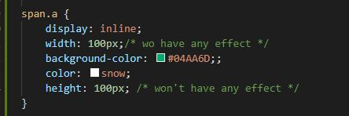
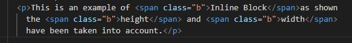

Display inline element is used to place elements beside each other without taking more space than it needs to.
Inline is similar to a highlighter in which you can highlight certain text.
The below code is used in the css file for the below example.
The below code is used in the html file for the below example.
This is an example of Inline as shown the height and width have not been taken into account.
Inline Blocks is similar to inline in which it allows elements to be placed beside each other.
The difference is that the width and height are taken into account to make space between the elements
The below code is used in the css file for the below example.
The below code is used in the html file for the below example.
This is an example of Inline Blockas shown the height and width have been taken into account.